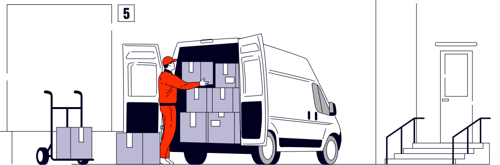

Для осуществления доставки необходимо при оформлении заказа выбрать «Доставка курьером» и далее, в блоке «Покупатель» указать адрес доставки. После заявки на доставку с вами свяжется оператор, который согласует сроки и стоимость доставки, после чего можете произвести оплату своего заказа. Дополнительно, в день доставки вам позвонит водитель за час до разгрузки.
Доставка осуществляется силами грузового такси. Время доставки с 14.00 до 18.00. Оплата осуществляется наличными водителю по завершению доставки. Ориентировочная стоимость 550 рублей в черте города Курска при максимальной загрузке не более 1,5 тонн, за городом дополнительно 36 рублей за километр от знака окончания города.
Внимание! «Подъем/занос товара на этаж», «Разгрузка и пронос товара», «Подача товара с борта» не включены в стоимость доставки и не осуществляются. Позаботьтесь заранее об организации разгрузочных работ!
Отменить или перенести доставку возможно, позвонив по номеру магазина - +7 4712 39-07-37. Перенос времени и даты доставки возможен, если вы связались со специалистом не позднее 14:00 дня, предшествующего согласованной ранедате доставки.
